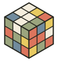
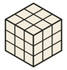
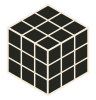

У роботі
Різні поєднання кольорів для різних початкових станів.
Завантажити SVG
ventureКубик стає образом проєкту: ідея, прототип після хакатону, дослідницьке напрацювання чи задача партнера. Повороти позначають роботу з невизначеністю та пошук наступного кроку.
Різні поєднання кольорів для різних початкових станів.
Завантажити SVG
Варіант для постійного логотипа й підпису.
Завантажити SVG
Для документів, друку та невеликих носіїв.
Завантажити SVG
venture